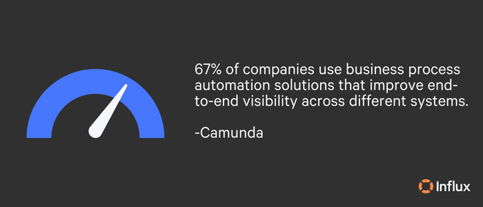

Entrepreneurs and business owners have a certain degree of creative freedom when it comes to running their business, including management and optimizing resources in order to achieve goals and objectives. Monitoring business operations and adjusting for effectiveness is vital for long-term success.
No matter the size of your business, you can benefit from operational efficiency in a myriad of ways. In this guide to improve business operations, you’ll find the information to magnify assets by breaking down business operations.
**Topics of discussion: **
What is operational efficiency in business?
How can small businesses benefit from improved operational efficiency?
How can large businesses benefit from improved operational efficiency?
Streamlining business processes
Operational performance tracking
Staying up to date with industry trends
How does outsourcing contribute to improved efficiency?
How Influx can improve operational efficiency
What is operational efficiency in business?
Operational efficiency refers to the ability of a company to effectively use its resources to produce goods and/or services. This can include things like automation, streamlining, and making data-driven decisions to optimize business processes. The goal of operational efficiency is to produce more output with fewer inputs in order to increase productivity and reduce costs.
**How can small businesses benefit from improved operational efficiency? **
The main benefits that small benefits can reap from operation efficiency are increased profits, productivity, and customer satisfaction that result in long-term growth. For small businesses, specifically those with limited resources, optimizing operations is vital for business growth and staying competitive.
**How can large businesses benefit from improved operational efficiency? **
By increasing operational efficiency, it allows large businesses to reduce costs and focus on core business. Optimizing business operations takes workload off departments and creates a better environment for employees and customers. Large businesses often need to scale their operations to accommodate growth. Improved operational efficiency can make it easier to expand by keeping costs under control.
**The key components of strengthening your business operations **
**Operating budget **
An operating budget is a financial plan that lays out an organization’s anticipated income and costs. Typically an annual goal, this budget can be broken down into quarterly projections, allowing management to organize and track financial resources on a smaller scale.
Budgeting is a large part of business operations. It helps to scrutinize costly expenses, determine whether a business needs to make any modifications, and compare outcomes to expected performance.
Our delineated plan to reset your budget:
- Review your current budget
- Set financial goals
- Measure your team’s needs and cut any unnecessary expenses
- Consider your fixed expenses and alternatives
- Determine your projected income and create a plan to increase it
- Automate your finances
- Account for unexpected costs with contingency funds or savings
- Make your new budget
- Monitor your progress
Once you have your new budget set, effectively communicating it to the right people is the next step in reaching your target goals. For more on achieving financial success, check out our piece on 6 ways to reduce eCommerce costs.
**Sales operations **
With your shiny new budget in order, the next important aspect of business operations is sales. Sales operations is a business function that supports, enables, and optimizes the sales team’s efforts. This involves activities like establishing sales objectives, coming up with strategies, managing data and analytics (more on that later), and empowering representatives with access to resources, tools, and technology.
The goal of sales operations is to increase the productivity and effectiveness of the sales force, which will ultimately result in more revenue for the business. Truly, we can’t get into every aspect of sales, but here are a few key components:
The first step to good sales operations is prospecting. To do that, you’ll need to know who your ideal customer is and how to reach them. If you already know this information, awesome! It never hurts to realign on exactly who your target audience is, create innovative strategies to reach them better, or review market research with any insightful updates.
Get absolutely clear about who you are and what you offer. Did you know that the average eCommerce return rate hovers around 20-30%? (Richpanel) It may benefit you and your customers to refresh messaging across the board or lean on a knowledge base as a sales enablement tool. Of course, customer returns are inevitable. A strong return policy can make or break a sale. As a proactive approach to sales, review and perfect your eCommerce return policy to encourage customers.
If you’re looking for any of the following, consider outsourcing your sales operations:
- Lower overhead costs
- Save time and resources
- Flex and scale as needed
- Low risks
- Book more calls and close more deals
- Performance metrics tracked
- Training and management included
- Improved customer experience
- Gain a competitive advantage
It can be difficult to trust another company to handle sales, but the right company will perfectly match your brand voice and give you access to experts who will act as an extension of your team. Our sales reps are ready to go in one week. Let us help you scale your sales!
**Customer service operations **
With steady sales coming in, you’ll want to focus on keeping your customers happy for increased loyalty and retention. Bonus benefit: more sales. Key responsibilities for customer service operations include:
- Developing and implementing customer service policies and procedures
- Managing and training customer service representatives
- Handling customer complaints and feedback (see customer feedback loop 101 for more)
- Monitoring customer service metrics and using data to improve service quality
- Implementing customer service technologies, such as CRM software, live chat, and knowledge bases
- Collaborating with other departments to ensure a seamless customer experience
There are a lot of factors that go into customer service processes to maximize customer satisfaction, such as personalizing customer support. Critical for every business, customer service operations play a vital role in building and maintaining customer relationships, which is crucial for long-term success and growth.
Once your team has put in the effort to acquire a new customer, you’ll want to make sure there are retention strategies in place to keep them. Here are a few customer retention strategies to keep growing your business:
- Track and analyze churn metrics
- Initiate a customer feedback loop
- Create a CX critical care plan
- Leverage personalization
- Use experiences to elicit positive emotions
- Form a community around your product/service
- Offer support on the right platforms
- Invest in top-notch customer support
Outsourced customer support teams are cost-effective and can benefit business operations by allowing a company to indulge in other critical aspects of keeping a business running. If outsourcing customer support is in the cards for your business, ask these questions to find a company that seamlessly integrates with your current operations.
For more on customer support operations, check out our customer support guide!

Streamlining business processes
One of the simplest ways to improve business operations is through streamlining your business processes. Save time and other resources with automation. Automation can help improve efficiency, reduce costs, and increase productivity. To determine what/how to automate business functions, consider these steps:
- Identify processes that can be automated. I.e. which processes are repetitive or time-consuming. These are typically suitable candidates for automation.
- Evaluate automation technology by researching different options for the identified processes.
- Implement the technology. This may involve configuring the software, integrating it with existing systems, and training employees on use.
- Test and monitor. Make sure that the automation is working correctly, and that it is meeting the desired objectives. Monitor performance to identify and resolve any issues.
- Continuously optimize by making any adjustments necessary to improve efficiency and effectiveness.
Optimizing operations eliminates inefficiencies and allows for better data-driven decision making. What business processes can you automate for increased efficiency?
**Operational performance tracking **
Data is your best friend when deciding to make any changes to business operations or to see the results of any changes that have already taken place. Operational performance tracking typically includes defining key performance metrics and setting targets, collecting and analyzing data, identifying areas of improvement and making data-informed decisions, and continuing to monitor results and adjusting accordingly.
Some key performance indicators that businesses may track include:
- Production and output
- Revenue
- Customer retention rate
- Customer acquisition cost
- Return on investment
- Operational metrics
Each individual team should monitor performance metrics regarding their specialized department. With this data, it takes the guess-work out of decision making and provides logical solutions.
**Staying up to date with industry trends **
Staying up to date with the latest trends in business operations is important for companies that want to remain competitive and adapt to changing market conditions. This allows a business to operate at a level that is constantly improving and remaining relevant. Leaders who read recently published articles and other publications, monitor the market, and are open to new ideas will continue to guide businesses in the direction of growth. Check out our 2023 digital transformation trend predictions and our CX trend predictions to stay in the know!
How does outsourcing contribute to improved efficiency?
Outsourcing let’s employees focus on their more crucial core function, such as growing your business, which can save a lot of time, energy, and expenses. With access to skilled professionals and a larger talent pool, it enables businesses to expand their reach and flex their operations. According to Deloitte…
Having a large pool of outsourced “on-demand” talent means companies can rapidly scale their workforce without the need to hire additional full-time employees and increase their overheads and their investment in office space and equipment. Using outsourcing creates new opportunities and makes better use of existing talent that helps employers get the most out of their current workforce.
How Influx can improve operational efficiency
Influx provides an extra layer of support for your existing team. Designed to scale, our teams work on-demand to provide 24/7 support with all management and training included. Ready to launch in one week, Influx teams provide the support you need to get back to what you love most. Boost your operational efficiency and find your support solution today!